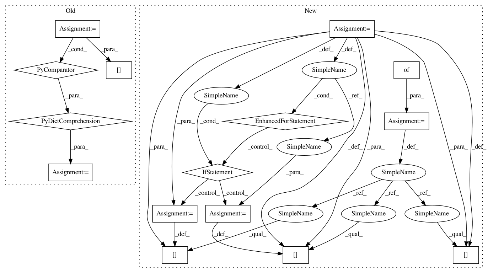

91e2f847f6dd9d57af9276d8d4aeee1e1fdc9030,tensorflow_transform/saved/saved_transform_io.py,,_partially_apply_saved_transform_impl,#Any#Any#Any#Any#,66
Before Change
// Create a map from tensor names in the graph to be imported, to the tensors
// specified in `input_tensors`.
input_map = {
input_signature[decomposed_logical_name]:
decomposed_input_tensors[decomposed_logical_name]
for decomposed_logical_name in decomposed_input_tensors}
input_map.update(asset_tensor_dict)
if tensor_replacement_map:
input_map.update(tensor_replacement_map)
After Change
// Create a map from tensor names in the graph to be imported, to the tensors
// specified in `input_tensors`.
input_map = {}
for logical_name, replacement in six.iteritems(logical_input_map):
tensor_info = input_signature[logical_name]
if tensor_info.WhichOneof("encoding") == "coo_sparse":
input_map[tensor_info.coo_sparse.indices_tensor_name] = (
replacement.indices)
input_map[tensor_info.coo_sparse.values_tensor_name] = replacement.values
input_map[tensor_info.coo_sparse.dense_shape_tensor_name] = (
replacement.dense_shape)
else:
input_map[tensor_info.name] = replacement
input_map.update(asset_tensor_dict)
if tensor_replacement_map:
input_map.update(tensor_replacement_map)
In pattern: SUPERPATTERN
Frequency: 3
Non-data size: 15
Instances
Project Name: tensorflow/transform
Commit Name: 91e2f847f6dd9d57af9276d8d4aeee1e1fdc9030
Time: 2018-06-12
Author: tf-transform-dev@google.com
File Name: tensorflow_transform/saved/saved_transform_io.py
Class Name:
Method Name: _partially_apply_saved_transform_impl
Project Name: tensorflow/transform
Commit Name: 91e2f847f6dd9d57af9276d8d4aeee1e1fdc9030
Time: 2018-06-12
Author: tf-transform-dev@google.com
File Name: tensorflow_transform/saved/saved_transform_io.py
Class Name:
Method Name: _partially_apply_saved_transform_impl
Project Name: rusty1s/pytorch_geometric
Commit Name: 675b7884c09875486fdddffa2d8a6a12247ab4d7
Time: 2020-05-31
Author: matthias.fey@tu-dortmund.de
File Name: torch_geometric/utils/convert.py
Class Name:
Method Name: to_networkx
Project Name: rusty1s/pytorch_geometric
Commit Name: a998e7a1fa996edb4bcc1b34a0df5967ed6ec9e2
Time: 2020-05-13
Author: matthias.fey@tu-dortmund.de
File Name: torch_geometric/utils/convert.py
Class Name:
Method Name: to_networkx